Misc¶
1. Task 1¶
1.1. Task 1.1¶
1.1.1. 用 GBK 解码 UTF-8 编码的文本¶
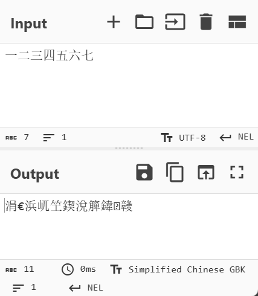
1.1.2. 用 UTF-8 解码 GBK 编码的文本¶
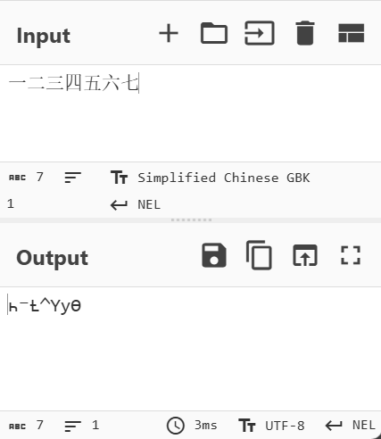
1.1.3. 用 latin-1 解码 UTF-8 编码的文本¶
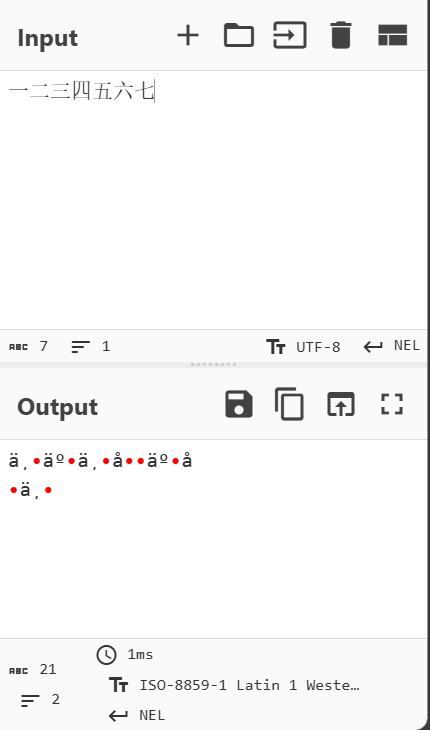
1.1.4. 用 latin-1 解码 GBK 编码的文本¶
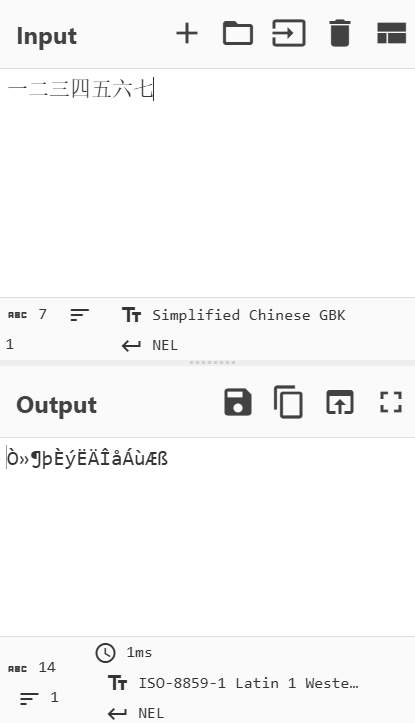
1.1.5. 先用 GBK 解码 UTF-8 编码的文本，再用 UTF-8 解码前面的结果¶
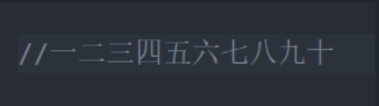
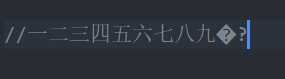
1.1.6. 先用 UTF-8 解码 GBK 编码的文本，再用 GBK 解码前面的结果¶
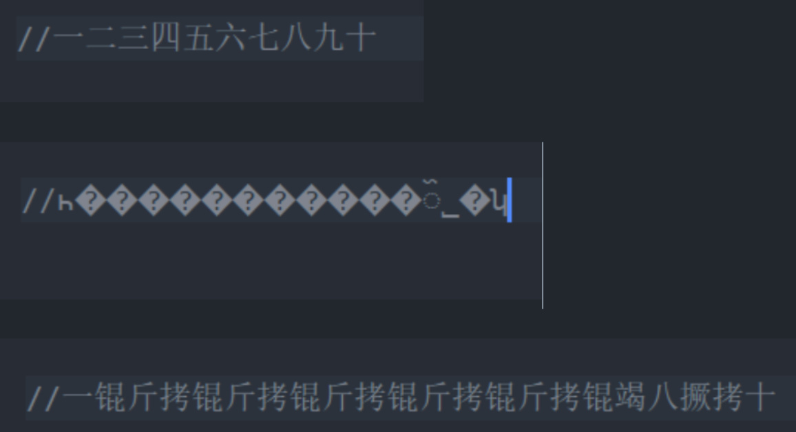
1.1.7. 总结¶
在没有用另一种编码方式保存的情况下，都是可以恢复的。而在以另一种编码保存后，就有可能会导致数据被破坏，因为部分的数据可能在转换时丢失。
从后面两个情况可以发现，UTF-8和GBK之间的转换是双向不可逆的，也就是无法恢复到原来的数据，除非原数据都在ASCII字符集内。两者的编码
不是以单字节为单位来储存信息的，转换过程会导致数据损失。
而Latin-1是ASCII码的拓展，以一个字节为单位储存字符，是最小的单位，不会造成损失，任何涉及到Latin-1的转换都是可以恢复的。
至于为什么最后一种情况会出现大量的“锟斤拷”，可以用UTF-8的一个特性来解释。UTF-8中的�被用来作为无法识别的替换符号，它以三个字节来保存：\xef \xbf \xbd，而GBK中的每个汉字用两个字节来保存。当多个替换符号接连出现时，连续的两个字节将有三种组合方式，分别是
- 锟 \xef\xbf
- 斤 \xbd\xef
- 拷 \xbf\xbd
因此就会不断输出这三个特定的汉字。
1.2. ZJUCTF2023 的 NATO26¶
| Text Only | |
|---|---|
原字符串有很多汉字，先采用GBK编码的方式转换，尝试用UTF-8解码得到：
| Text Only | |
|---|---|
根据提示，base58编码原理是将ascii编码的字符串（256进制），转换成58进制。然后按照58进制的码表转换成相应的字符。
以及这里的奇怪词组是NATO的音标的翻译或音译，转换得到：
但是BPLQECUPEZFTSUJJQDZWGGXBOXZMEUZSDHVGKVGKVMNEVWSDKICMAIUOB或bplqecupezftsujjqdzwggxboxzmeuzsdhvgkvgkvmnevwsdkicmaiuob之后就没有进展了，尝试了base系列编码和其他常见密码都失败了，不知道是翻译错误还是没理解提示怎么用。时间有限，只能搁置了。
2. Task 2 : Challenge 2¶
2.1. Easy¶
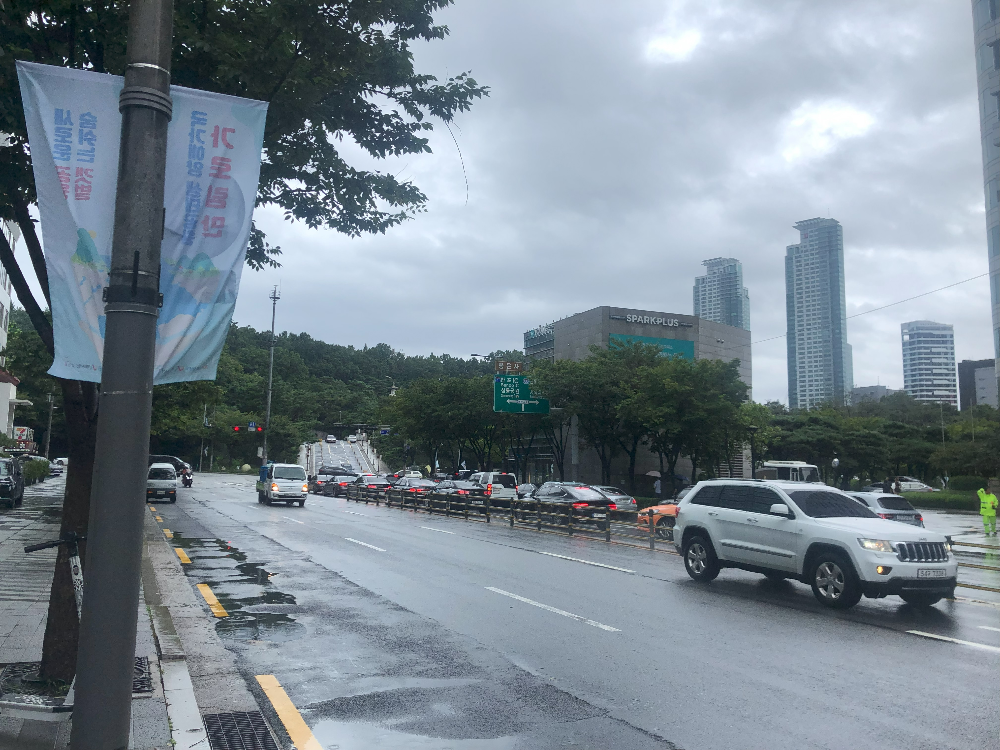
2.1.1. Answer of the easy one¶
先回答这个问题的答案：
拍摄地点：
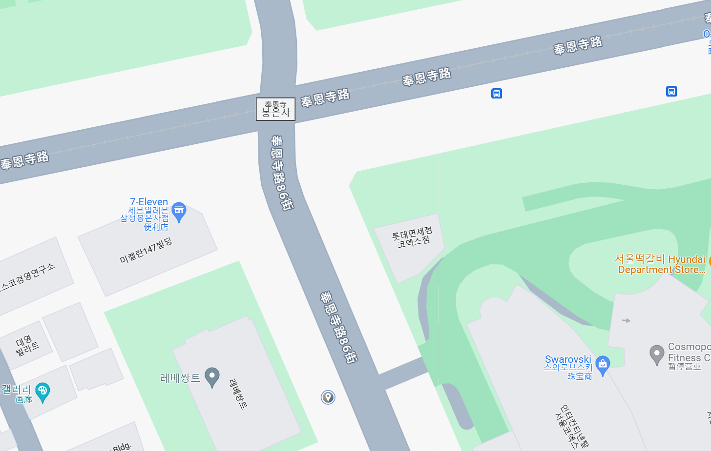
大致位于韩国首尔市江南区的三成路108街和奉恩寺路86街的交汇处再往西北向走一些，北纬37.5131118°,东经127.0567092°
图中绿色路牌被遮挡部分为：Olympic Expwy和Seoul Medical Center。
2.1.2. 思路：Easy¶
图中有一个绿色的路牌，根据路牌上方的旅游景点的名字进行翻译，得到了奉恩寺。从搜索引擎处可知，奉恩寺位于韩国首尔市，由此缩小了搜索范围。
根据图片上的1和88号道路可以锁定图片的拍摄方向，根据Banpo IC可以锁定所谓的1号道路，并由此找到88号道路，可以得到1号道路位于西侧，88号道路位于东侧。
由以上两条信息可知，拍摄地点应该在奉恩寺的南侧，拍摄方向是朝北，因此我们需要寻找的是一条南北走向的道路，而且这条道路的尽头有一个上升的引桥，桥附近有较多的绿色植被。由于首尔市这块区域的绿色植被覆盖很少，很容易锁定到位置就在紧邻奉恩寺的南侧道路附近，锁定了这条街道附近：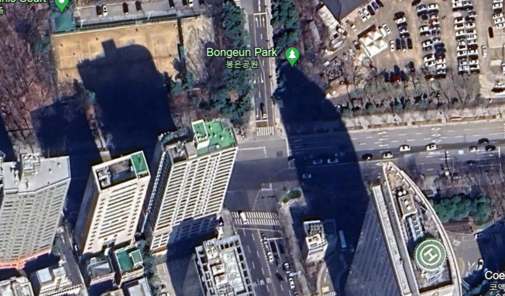
使用谷歌街景找到该地的实景图：
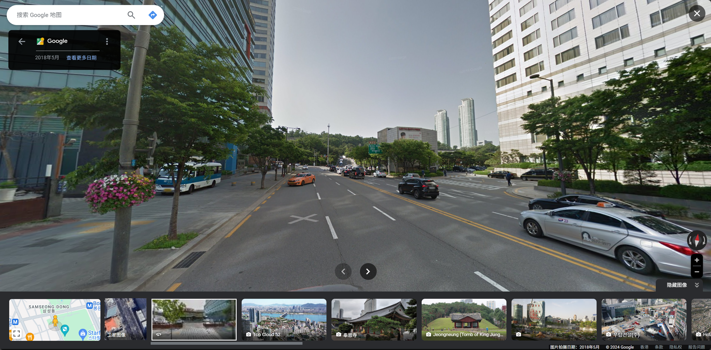
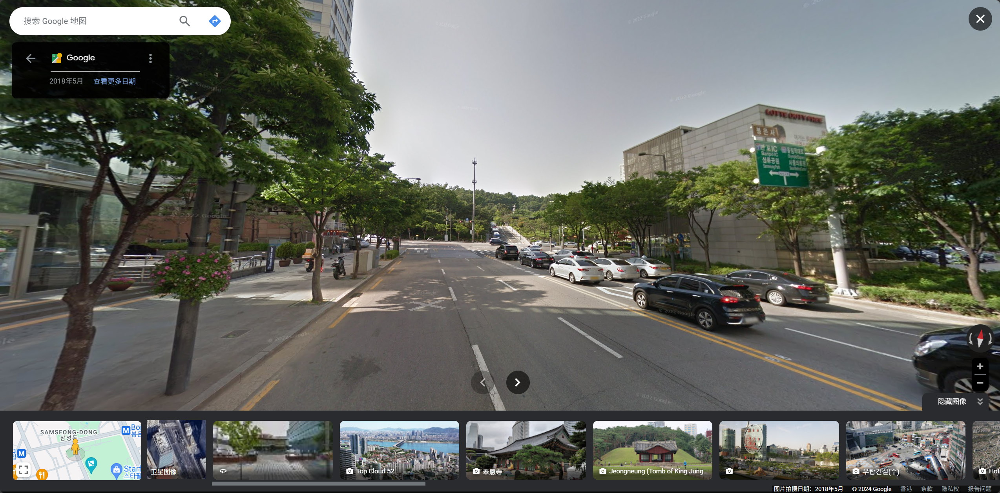
即便是六年前的街景图，相关要素也完全符合：相同位置的桥，路牌，后方的商场，远处两个高层建筑，甚至左侧的路灯。因此可以确定，这就是图片的拍摄地点，接下来只需要根据图片找到路牌上的文字就行。
2.2. Real¶
2.2.1. Answer of the real one¶
- pumpk1n 参加的 CTF 比赛名称：第八届XCTF总决赛
- 他所乘坐飞机的航班号：GS6508
- 飞机大致的起飞与落地时间：2024年6月23日16：25-18：49
- 图中出现的一个江中岛的位置：北纬30.0439°,东经119.9938°
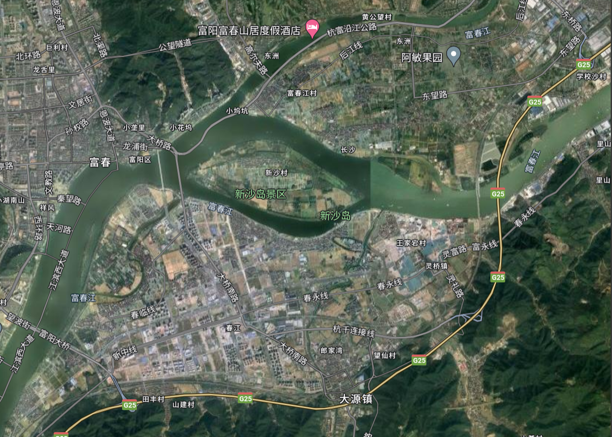
2.2.2. 思路：Real¶
- 首先，通过查询图片的exif信息得知拍摄时间是6月23日的下午6点32分，结合题目给的条件知道这是主人公打完ctf线下比赛返回杭州的航班。因此第一步是找到23日前结束的重要CTF线下比赛
- 查询网络得知6月22日成都有一场大型线下比赛：第八届XCTF总决赛，而且浙大的AAA战队参加了总决赛：
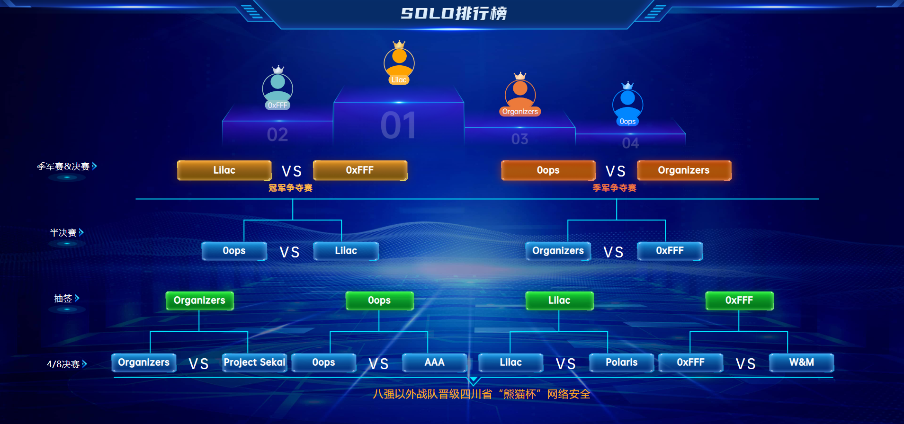
- 再根据图片找到天津航空标志和文字，确定这是从成都飞往杭州的天津航空公司的航班，去官网查到从成都到杭州的航班的正常时间是15:45到18:30，航班号为GS6508
- 在Flightaware找到当天的航班的起飞降落时间是：04:25下午 CST - 06:49下午 CST ，飞行时长2:23
- 从flightradar24找到航班的飞行路线，分析即将降落的部分： 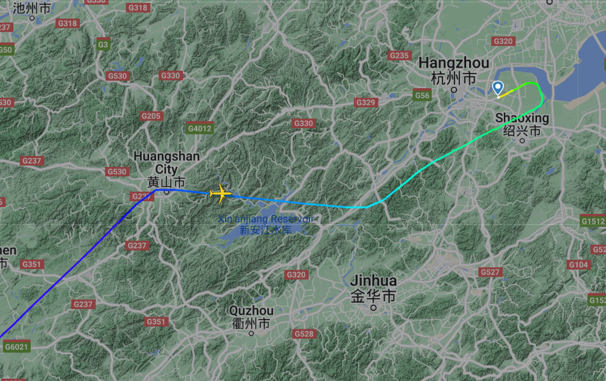
- 飞机自西向东，拍摄角度位于飞机的左舷；当日降落区域均有较厚云层，无法缩小范围，只能根据航班路线来找：能与航班路径接近平行的河道，且位于飞机左舷的，似乎只有钱塘江
- 沿着钱塘江搜索，有多个江心岛，分析图片中江心岛的特征，最有可能的是：新沙岛。理由如下：岛屿上游处有桥，和图中一条长状阴影对应；岛屿后方有一处山丘，也和地图中的一致；岛屿下游处河道似乎存在分流，也和地图一致；且图中右侧有一个更小的岛屿，也和地图中看到的一致；南侧的冲积平原特征较少，结合居民区只能大致判断。
- 另外，其上游和下游都还有一个江心岛：
 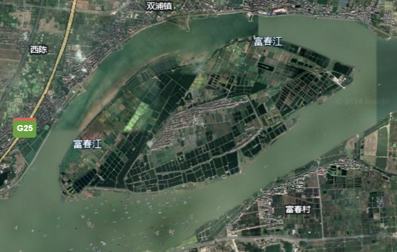
* 其中，下游的岛没有桥，也没有后面的山丘，可以排除；上游的虽然有山有桥，但是河道不像，以及没有旁边的小岛，也基本可以排除。
* 综上，新沙岛大概率就是我们要找的岛屿，另外找了一些航拍作为参照：
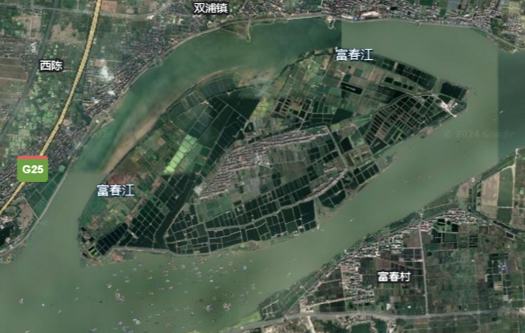
* 其中，下游的岛没有桥，也没有后面的山丘，可以排除；上游的虽然有山有桥，但是河道不像，以及没有旁边的小岛，也基本可以排除。
* 综上，新沙岛大概率就是我们要找的岛屿，另外找了一些航拍作为参照：

3. Task 2：Challenge 1（Bonus）¶
- GB2312是三个之中最早的规范，每个汉字都使用两个字节，第一个字节是高位字节，第二个字节是低位字节。分为94个区，每区94位。第一字节（区码）在0xA1到0xF7之间，第二字节（位码）在0xA1到0xFE之间。
- GBK 也是双字节编码，能够向下兼容 GB2312，但编码范围大于GB2312：第一个字节 0x81–0xFE，第二个字节 0x40–0xFE。
- 而GB18030是一种变长编码，可以使用单字节、双字节和四字节编码字符。它包含了全部Unicode字符集，是目前字符数量最多的中文字符集编码标准。单字节部分兼容ASCII，双字节部分兼容GBK，新增的字符和符号使用四字节编码。但注意：对于同一个字符，GB18030 和 Unicode 对应的编号可能是不一样的。
简单地说，只要在前一个标准的基础上拓展范围，而又不修改前一个标准的部分，就可以实现向下兼容。GBK兼容GB 2312，即所有在GB 2312中定义的字符在GBK中保持不变，位置也相同。GB 18030则兼容GBK和GB 2312，意味着任何一个GB 2312或GBK编码的文本，在GB 18030编码下都能正确解码。GB系列编码在扩展的同时，保持了一定的结构特征，如双字节编码的使用。